14 procedural material packs and a complete library – Smart Controls, wear presets, painted layers, decals, real displacement and Asset Browser libraries.
Every pack, every tool, one add-on. 652 shaders.
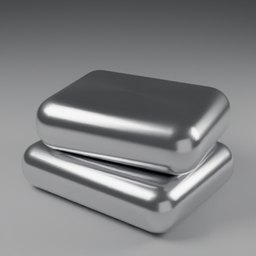
Chrome, gold and brushed steel without a single texture. 34 shaders.
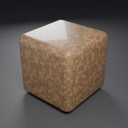
Real wood, grown ring by ring. 16 shaders.
Showroom paint without a single texture. 21 shaders.
The ground under everything. 18 shaders.
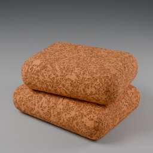
Product-shot materials with tiny imperfections. 75 shaders.
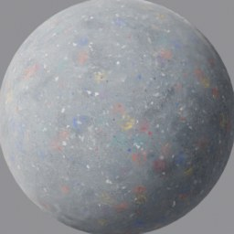
From raw concrete to porcelain. 68 shaders.
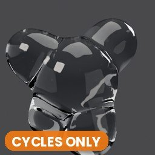
Everything see-through. 57 shaders.
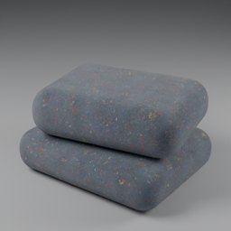
Soft materials with real texture. 85 shaders.
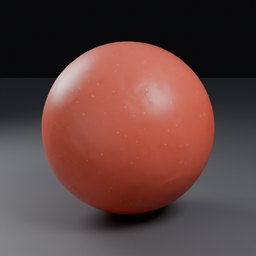
Plasticine you can almost touch. 51 shaders.
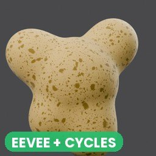
Skin that looks alive. 27 shaders.
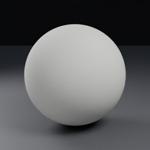
Paper you can almost feel. 10 shaders.
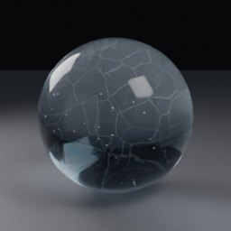
Winter and rain in one click. 80 shaders.
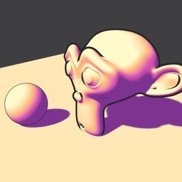
Looks made for motion design. 67 shaders.
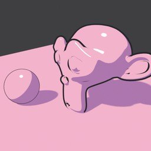
Make 3D look drawn by hand. 43 shaders.
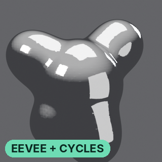
Type, paint or convert meshes into chrome.